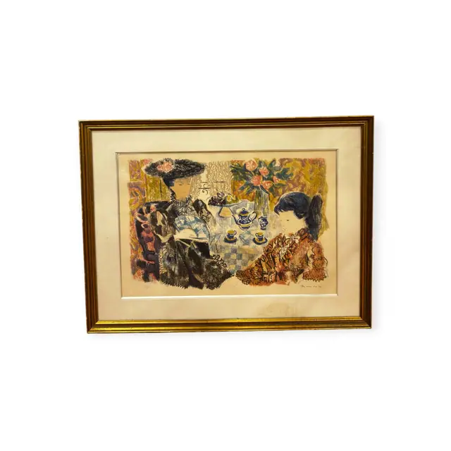
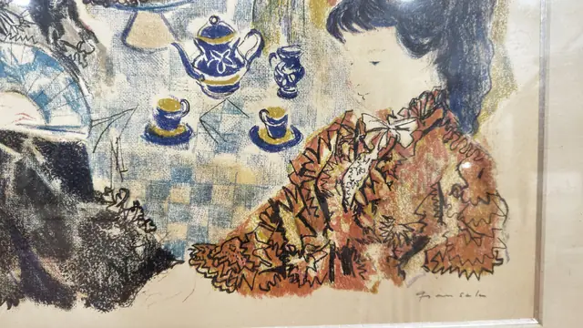
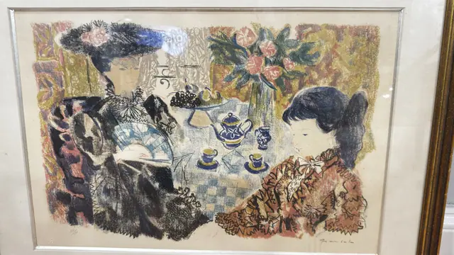
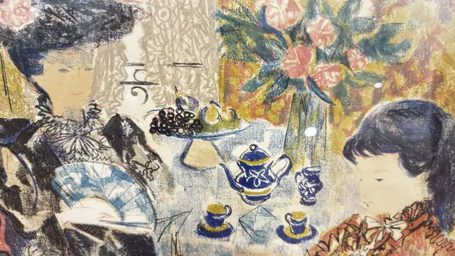
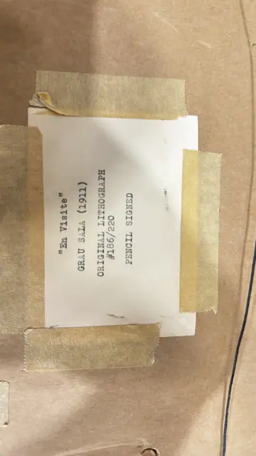

Paintings & Prints
Grau Sala Colour Lithograph, En Visite, Numbered Edition, Framed
GRAU SALA · mid 20th century
Price Upon Request





About the Item
GRAU SALA. A crowded interior scene drawn in soft lithographic crayon: at left an older woman in an enormous black plumed hat and dark lace shawl leans over a checkered tablecloth, while at right a dark-haired girl in a frilled russet dress leans in from the other side. Between them stand a blue-and-white teapot, cups, a footed dish of fruit and a glass vase of pink roses, against a mottled patterned backdrop of ochre, rust and olive. The colour is dry and chalky with visible crayon grain and a wide bare paper margin, and the whole sheet is floated in a cream mount. Medium: colour lithograph on paper. Signed lower right, in pencil below the image, reading "Grau Sala". Edition: #186/220, pencil signed. Inscribed on the reverse or mount: pencil fraction at lower left of the sheet, indistinct in the photographs, with a small embossed blind stamp beneath it; "En Visite" GRAU SALA (1911) ORIGINAL LITHOGRAPH #186/220 PENCIL SIGNED (typed label taped to a brown-paper backing board; the label was photographed as IMG_7941, filed with the following listing); label photographed as IMG_7941, moved here from B032. Condition: Light overall toning of the sheet and mount; some spotting on the mount at lower left; scattered lamp reflections on the glass. No tears or losses visible.
Details
- Creator:
- GRAU SALA
- Creation Year:
- mid 20th century
- Dimensions:
- Height: 21.0 in (53.34 cm)
Width: 27.5 in (69.85 cm)
outside of frame - Medium:
- colour lithograph on paper
- Edition:
- #186/220, pencil signed
- Period:
- 20Th
- Condition:
- Offered in the condition shown in the photographs.
- Reference Number:
- VO-213
- Documentation:
- no certificate; identification comes from a typed label on the backing board
- Gallery Location:
- pencil fraction at lower left of the sheet, indistinct in the photographs, with a small embossed blind stamp beneath it; "En Visite" GRAU SALA (1911) ORIGINAL LITHOGRAPH #186/220 PENCIL SIGNED (typed label taped to a brown-paper backing board; the label was photographed as IMG_7941, filed with the following listing); label photographed as IMG_7941, moved here from B032